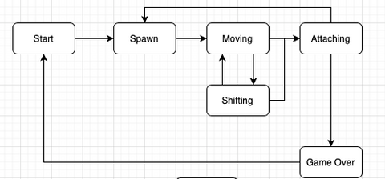

Этот код реализует простую версию игры Тетрис в консоли с использованием библиотеки ncurses для управления выводом на терминал. Основные функции программы:
Инициализация экрана: настройка режимов отображения (отключение курсора, эхо-режима и т.д.).
Отображение стартового экрана: пока пользователь не нажмет пробел, на экране отображается приглашение к началу игры.
Основной игровой цикл: обрабатывает нажатия клавиш для управления фигурами (вверх, вниз, влево, вправо, пауза, выход) и обновляет состояние игры.
Отображение игрового поля: вывод текущего состояния игры, включая игровое поле с фигурами, счет и уровень.
Конец игры: когда игра заканчивается, предлагает пользователю сыграть еще раз или выйти.
Функция draw_game отвечает за отображение игрового поля и обработку конца игры соответственно. Функция save_max_score сохраняет счет в файл, если он выше предыдущего рекорда.
